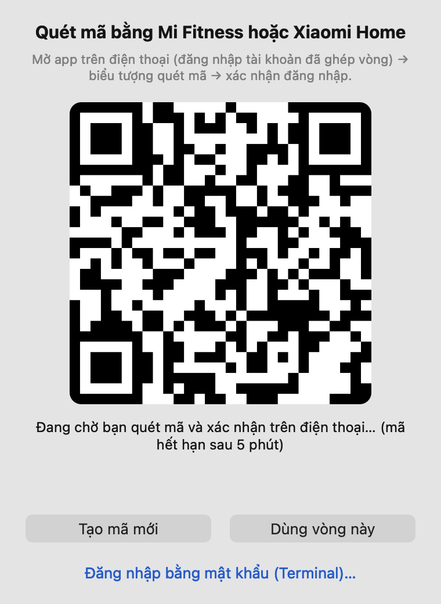
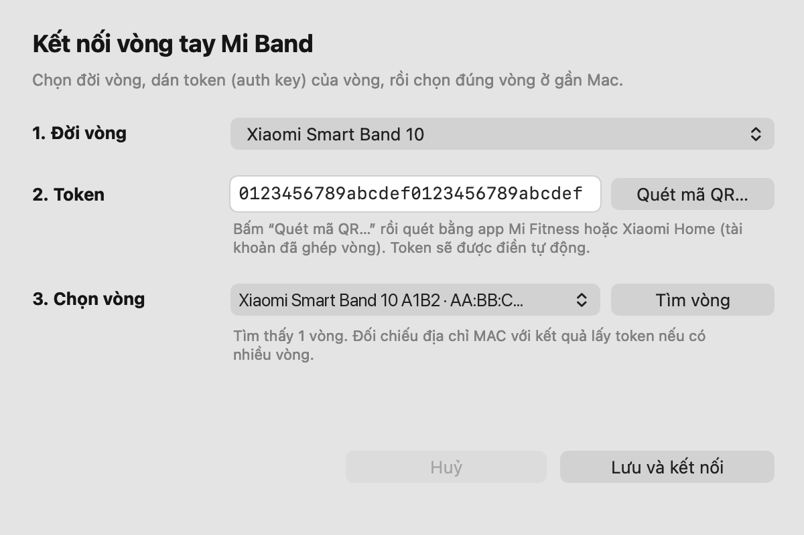
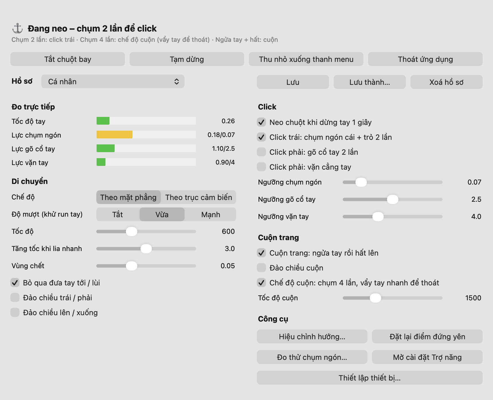

Di chuyển con trỏ
Lia hoặc gạt cẳng tay
Tay đi đâu, con trỏ đi theo. Lia chậm để nhắm chính xác, hất nhanh để đi xa: có tăng tốc như chuột thật.
Lia cẳng tay để di chuyển con trỏ, chụm ngón cái vào ngón trỏ để click, chụm bốn lần để cuộn trang. Hướng dẫn này đi từ lúc lấy token của vòng đến khi dùng thành thạo các cử chỉ.
| Cần có | Ghi chú |
|---|---|
| Máy Mac | Đã cài MiBand AirMouse trong thư mục Applications của bạn. |
| Xiaomi Smart Band 10 | Đã ghép đôi với app Mi Fitness trên điện thoại. Mi Band 9 / 9 Pro / 9 Active đang ở mức thử nghiệm. |
| Điện thoại | Có Mi Fitness hoặc Xiaomi Home, đăng nhập đúng tài khoản Xiaomi đã ghép vòng. Chỉ dùng để quét mã QR một lần. |
Mỗi lúc vòng chỉ kết nối được với một thiết bị. Khi dùng với Mac, hãy tắt Bluetooth trên điện thoại (trong Cài đặt, không chỉ ở Trung tâm điều khiển) hoặc thoát hẳn Mi Fitness.
Biểu tượng của app hiện trên Dock, và biểu tượng ⌚︎ hiện trên thanh menu ở góc trên màn hình. Lần đầu mở, màn hình Thiết lập thiết bị sẽ tự hiện.
Khi macOS hỏi, bấm Allow. App cần Bluetooth để nói chuyện với vòng.
Vào System Settings → Privacy & Security → Accessibility và bật MiBand AirMouse. Thiếu quyền này, app vẫn đọc được vòng nhưng macOS chặn mọi lệnh di chuột và click. Cửa sổ điều khiển sẽ báo bằng một dòng chữ đỏ, kèm nút Mở cài đặt Trợ năng.
Nếu chuột không chạy dù đã bật quyền: tắt rồi bật lại công tắc MiBand AirMouse trong Accessibility, sau đó thoát và mở lại app. Việc này cần làm lại mỗi khi cài bản app mới.
Token (auth key) là chìa khoá riêng của từng chiếc vòng, được tạo khi vòng ghép đôi với Mi Fitness. App lấy nó từ tài khoản Xiaomi của bạn. Bạn không cần nhập mật khẩu, chỉ cần xác nhận đăng nhập trên điện thoại.
Nút nằm cạnh ô Token trong màn hình thiết lập. Một cửa sổ mã QR hiện ra.
Mở Mi Fitness hoặc Xiaomi Home, chọn biểu tượng quét mã, quét mã trên màn hình Mac rồi bấm xác nhận đăng nhập.
App tìm vòng trong tài khoản, tự điền token, chọn đời vòng và chọn đúng vòng theo địa chỉ MAC. Nếu tài khoản có nhiều vòng, chọn vòng muốn dùng rồi bấm Dùng vòng này.

Không dùng được mã QR? Bấm dòng Đăng nhập bằng mật khẩu (Terminal)… ở cuối cửa sổ. Công cụ lấy token sẽ chạy trong Terminal, bạn nhập tài khoản và mật khẩu Xiaomi rồi chép dòng TOKEN vào ô Token.

Vòng tắt màn hình thì phát tín hiệu thưa, khó tìm hơn.
App quét khoảng 8 giây và liệt kê các vòng Xiaomi ở gần, kèm địa chỉ MAC và cường độ tín hiệu. Vòng mà macOS đang giữ kết nối cũng hiện trong danh sách.
App lưu thông tin và kết nối ngay. Vòng sẽ hiện màn hình tập luyện: đó là “buổi tập ẩn” app dùng để đọc cảm biến, không ảnh hưởng dữ liệu sức khoẻ của bạn.
Muốn đổi sang vòng khác, đổi token hay quét lại, bấm Thiết lập thiết bị… trong cửa sổ điều khiển hoặc menu ⌚︎.
Làm một lần cho mỗi cách đeo vòng. App học xem vòng nằm dọc cẳng tay theo trục nào và chiều nào là “sang phải”, “lên trên”. Mở cửa sổ điều khiển, bấm Hiệu chỉnh hướng…, đặt tay ở tư thế bạn hay dùng rồi làm theo ba bước:
Bấm OK rồi vặn cẳng tay qua lại vài lần trong 2 giây.
Bấm OK rồi đưa vòng sang phải, theo kiểu bạn sẽ dùng: lia cả tay hay chống khuỷu tay đều được.
Bấm OK rồi đưa vòng lên trên. Xong, app tự chuyển sang chế độ “Theo mặt phẳng”.
Biểu tượng trên thanh menu cho biết app đang ở trạng thái nào:
Vòng đeo ở cẳng tay, nên nó cảm nhận chuyển động của cả cẳng tay. Gập riêng bàn tay gần như không có tác dụng. Hãy dùng tay như đang cầm bút laser chỉ vào màn hình.
Tay đi đâu, con trỏ đi theo. Lia chậm để nhắm chính xác, hất nhanh để đi xa: có tăng tốc như chuột thật.
Con trỏ khoá tại chỗ (biểu tượng ⚓). Rung tay hay lực chụm ngón không làm nó xê dịch. Đưa tay đi có chủ ý là con trỏ chạy tiếp.
Theo hướng nào cũng được. Phần trang bị cuộn lúc lấy đà được hoàn lại, con trỏ đứng yên một nhịp rồi đi theo tay. Chụm 4 lần cũng thoát được.
Khuỷu tay duỗi hay gập làm cẳng tay ngóc lên, chúi xuống, nhưng app nhận ra và giữ con trỏ đứng yên. Bạn thoải mái đổi tư thế.
Click phải đang tắt theo mặc định, vì bấm ngón tay mạnh dễ bị nhận nhầm. Nếu cần, bật Click phải: gõ cổ tay 2 lần trong cửa sổ điều khiển. Khi đó gõ cổ tay ra trước 2 lần sẽ là click phải.
Bấm biểu tượng app trên Dock để mở cửa sổ điều khiển. Mọi thanh trượt có hiệu lực ngay khi kéo. Phần Đo trực tiếp cho thấy lực mỗi cử chỉ so với ngưỡng: thanh chuyển vàng khi vượt ngưỡng, nhờ vậy bạn biết nên chỉnh lên hay xuống.

| Muốn | Chỉnh |
|---|---|
| Tay di ít mà vẫn đi hết màn hình | Tăng tốc khi lia nhanh lên khoảng 3–5. Giữ Tốc độ ở khoảng 600. |
| Con trỏ rung khi nhắm | Độ mượt: Mạnh. Hoặc tăng Vùng chết một chút. |
| Chụm ngón hay bị hụt | Ngưỡng chụm ngón khoảng 0.06–0.08. Đừng hạ thấp hơn: khi đó cả rung lúc nhả ngón cũng bị đếm, làm click hụt nhiều hơn. |
| Trang cuộn ngược ý | Bật Đảo chiều cuộn. |
| Con trỏ đi ngược hướng | Chạy lại Hiệu chỉnh hướng…, hoặc bật Đảo chiều trái / phải, Đảo chiều lên / xuống. |
Hồ sơ lưu toàn bộ thông số, kể cả kết quả hiệu chỉnh hướng. Chọn hồ sơ ở đầu cửa sổ để áp dụng ngay, bấm Lưu để ghi thông số đang dùng, hoặc Lưu thành… để tạo hồ sơ mới cho người khác hay cho cách đeo khác. Dòng • chưa lưu nhắc bạn khi có thay đổi chưa ghi.
| Hiện tượng | Cách xử lý |
|---|---|
| Không tìm thấy vòng | Bật sáng màn hình vòng, tắt hẳn Bluetooth điện thoại, đặt vòng gần Mac rồi bấm Tìm vòng lại. |
| Báo “Peer removed pairing information”, hoặc kết nối bị treo | Vào System Settings → Bluetooth, bấm ⓘ cạnh Xiaomi Smart Band 10, chọn Forget This Device, rồi mở lại app. |
| Báo sai token | Token đổi mỗi khi vòng được reset hoặc ghép đôi lại với Mi Fitness. Vào Thiết lập thiết bị… và quét mã QR lại. |
| Kết nối được nhưng chuột đứng yên | Thiếu quyền Trợ năng: xem dòng đỏ trong cửa sổ và làm theo bước 2. |
| Con trỏ tự trôi | Để yên tay khoảng 1,5 giây là app tự sửa. Hoặc bấm Đặt lại điểm đứng yên rồi giữ yên tay. |
| Vòng tụt pin nhanh | Đó là do vòng gửi cảm biến liên tục. Bấm Tắt chuột bay hoặc thoát app khi không dùng. |